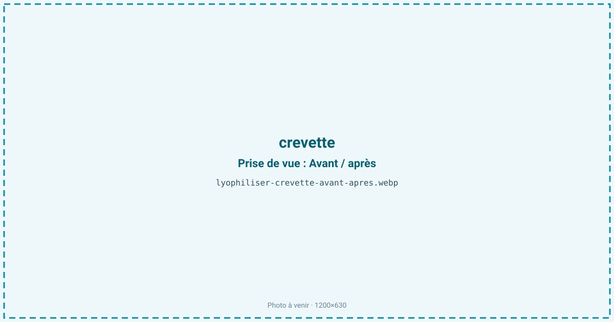
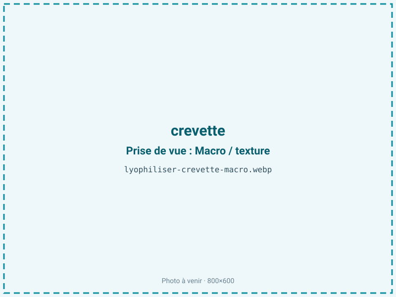
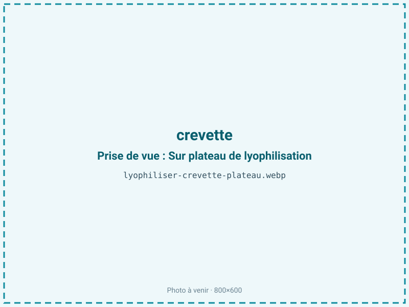
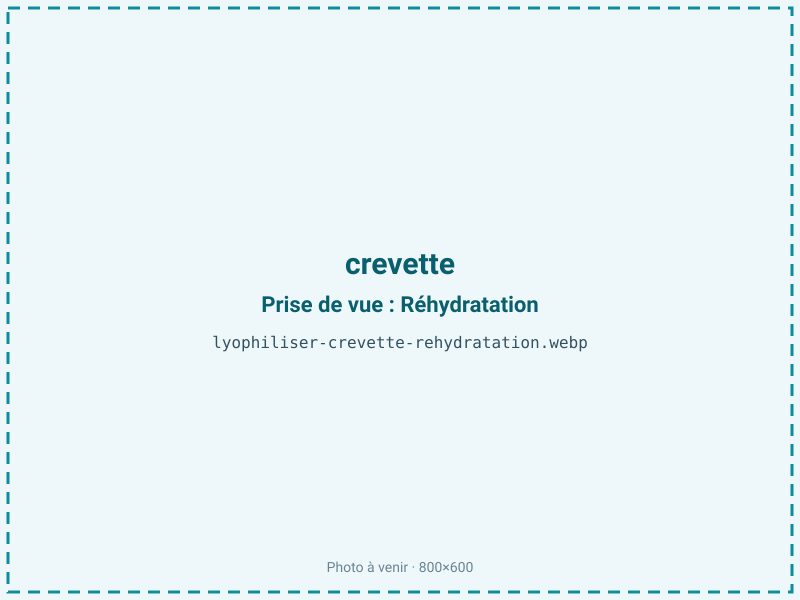

Lyophiliser des crevettes
La crevette fraîche est fragile et se dégrade vite, la surgelée exige la chaîne du froid. Lyophilisée après décorticage, elle se réhydrate presque à l'identique en quelques minutes, gardant sa couleur rose et sa texture, sans contrainte de froid. C'est l'ingrédient marin phare des plats de randonnée et des nouilles instantanées.

En bref
Comment crevette se comporte à la lyophilisation
La chair de crevette contient environ 78 % d'eau et peu de lipides (moins de 2 %), ce qui en fait un produit maigre à la réhydratation remarquable. Sa couleur rose ne préexiste pas : l'astaxanthine, pigment caroténoïde, est masquée dans la crevette crue par une protéine (la crustacyanine) et ne se révèle qu'à la chaleur ou, ici, à la dénaturation par le séchage. Le muscle est organisé en segments qui se contractent en « virgule » dès qu'on chauffe ; une pré-cuisson trop poussée avant lyophilisation fige cette courbure et durcit la chair. À la congélation, la chair fine sèche vite une fois étalée, et le front de sublimation progresse régulièrement car l'épaisseur utile est faible. Les protéines musculaires, dont la tropomyosine — l'allergène majeur des crustacés, non détruit par le procédé — traversent le froid intactes. La faible fraction lipidique limite les problèmes d'oxydation, mais l'astaxanthine, elle, peut pâlir sous l'effet de la lumière et de l'oxygène.
Paramètres de cycle
Décortiquer et déveiner avant traitement : la carapace de chitine gêne une réhydratation homogène et le boyau concentre des amertumes. Une crevette crue donne le meilleur résultat ; si l'on pré-cuit pour des raisons sanitaires, s'arrêter au tout début de la coloration pour éviter le durcissement. Congeler rapidement à −30 °C. Étaler en couche unique, crevettes à plat plutôt qu'empilées, pour un séchage régulier. Clayette de 20 à 25 °C en primaire, palier secondaire prolongé pour descendre l'aw. La cible est fixée entre 0,30 et 0,45 : produit maigre, la crevette tolère une aw basse, et viser le bas de la fourchette prolonge la conservation sans risque de rancissement. Le critère d'arrêt est une chair sèche et cassante, avec contrôle d'aw en fin de cycle.
Pièges connus
- Décortiquer avant traitement pour une réhydratation homogène.
- Éviter la sur-cuisson préalable qui durcit la chair.



Variantes & provenance
Le calibre commande tout : une petite crevette grise sèche et se réhydrate plus vite qu'une gambas ou un gambon, qui demandent une couche plus fine et un cycle plus long. L'espèce joue sur la couleur et le goût : crevette rose, grise, nordique ou tropicale d'élevage n'ont ni la même teneur en astaxanthine ni la même fermeté. Sauvage ou d'élevage, la chair diffère en eau et en tenue. Entière, décortiquée ou en morceaux pour les plats préparés, le format change l'épaisseur d'étalement. Une crevette déjà cuite à l'achat se lyophilise, mais sa texture finale sera plus ferme qu'à partir de cru.
Conservation & DLUO
Le facteur limitant n'est pas l'oxydation des graisses, quasi absentes, mais la reprise d'humidité et le ternissement de l'astaxanthine sous l'effet de la lumière et de l'oxygène : une crevette qui pâlit a perdu son attrait visuel avant même d'être altérée. Produit maigre, elle supporte une aw basse sans risque de rancissement, ce qui autorise à viser 0,30-0,45, voire un peu moins pour gagner en stabilité. Comptez 8 à 12 mois en sachet standard, davantage en barrière azotée qui limite à la fois l'humidité et la décoloration. Un conditionnement opaque protège le rose. Stockage à température ambiante, à l'abri de la lumière ; le frais n'est pas indispensable mais préserve mieux la couleur sur la durée.
8 à 12 mois en sachet, plus en barrière azotée.
Estimez selon votre emballage :
Face aux autres procédés de séchage
Séchée à l'air chaud, la crevette durcit et se recroqueville en un produit corné qui ne se réhydrate qu'imparfaitement, façon crevette séchée asiatique au goût très concentré. L'étuvage à chaud accentue ce durcissement. Le micro-ondes sous vide sèche plus vite mais laisse une texture plus ferme et une réhydratation moins fidèle. La lyophilisation se distingue précisément là où on l'attend : une crevette qui, replongée quelques minutes dans l'eau chaude, retrouve un galbe et un moelleux très proches du frais. C'est ce rendu « comme fraîche » qui en fait la référence des plats lyophilisés de randonnée et des soupes instantanées.
Marchés & applications
La crevette lyophilisée est un pilier des plats déshydratés de randonnée et d'expédition, des nouilles et soupes instantanées, et des mélanges apéritifs protéinés. On la retrouve en garniture de plats préparés lyophilisés et, en poudre, comme base aromatique de bisques et bouillons instantanés. Les acheteurs types sont les fabricants de repas outdoor, les marques de nouilles instantanées haut de gamme et le snacking protéiné. Le pet-food et l'alimentation aquariophile constituent des débouchés annexes pour les petits calibres.
- Plats lyophilisés de randonnée
- Nouilles et soupes instantanées
- Snack protéiné
Questions fréquentes — crevette
La crevette lyophilisée se réhydrate-t-elle vraiment comme fraîche ?
Presque : replongée quelques minutes dans un liquide chaud, elle retrouve galbe et moelleux. C'est le produit marin où la réhydratation est la plus fidèle.
Faut-il la décortiquer avant ?
Oui, la carapace freine une réhydratation homogène ; on déveine aussi pour éviter les amertumes concentrées dans le boyau.
Crue ou cuite ?
La crue donne la meilleure texture finale. Si une pré-cuisson sanitaire est requise, il faut la garder minimale pour ne pas durcir la chair.
Reste-t-elle rose ?
Oui, l'astaxanthine se révèle au séchage. La couleur peut pâlir à la lumière, d'où l'intérêt d'un conditionnement opaque.
La crevette lyophilisée est-elle toujours allergène ?
Oui : la tropomyosine, allergène des crustacés, résiste au froid comme au séchage. L'étiquetage reste obligatoire.
Combien de crevettes pour 100 g sec ?
Environ 5:1 sur chair décortiquée, soit 500 g de chair pour 100 g de produit. En crevettes entières, il en faut nettement plus.
Peut-on partir de crevettes surgelées ?
Oui, à condition d'une surgélation initiale rapide. Une chaîne du froid mal maîtrisée dégrade la texture avant même la lyophilisation.
Prochaine étape : envoyez-nous 200 g
Vous avez les repères de la crevette. La suite logique : nous envoyer un échantillon et repartir avec une fiche technique sur votre produit — rendement, aw finale, coût au kilo.
Tester la crevette — 250 à 500 €Déductible de votre premier lot.